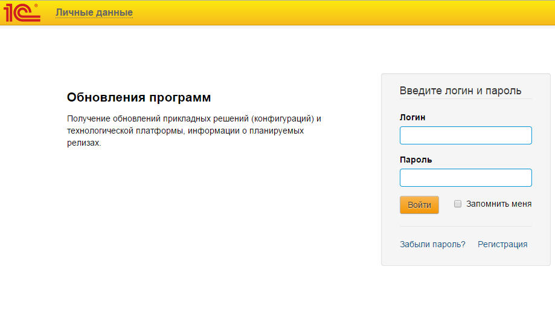
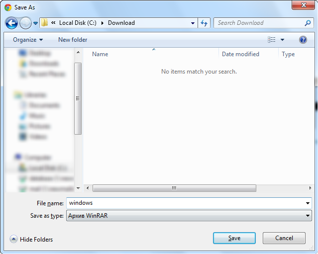
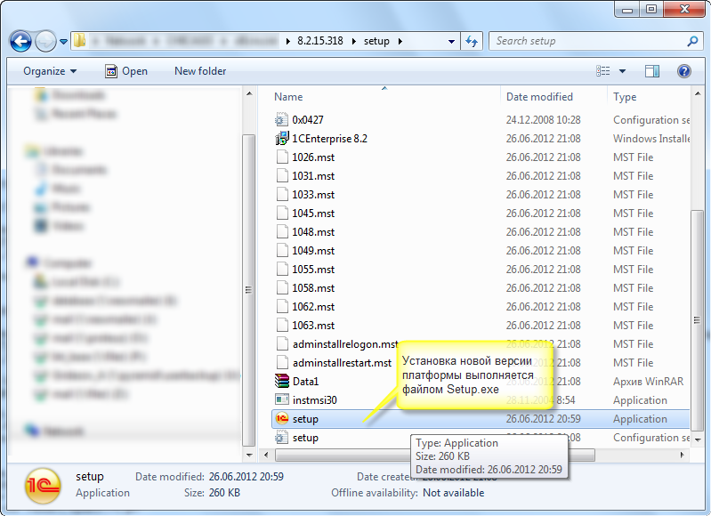
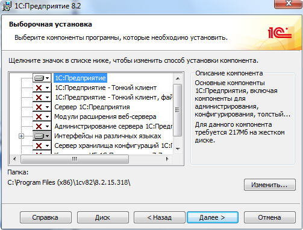
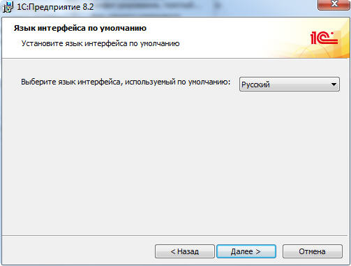
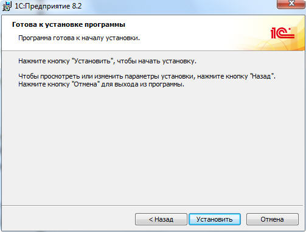
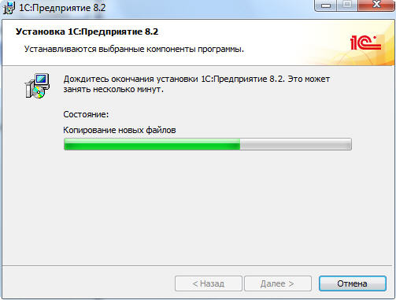
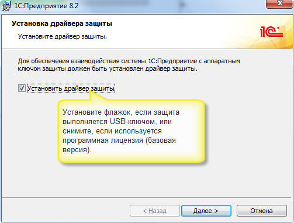
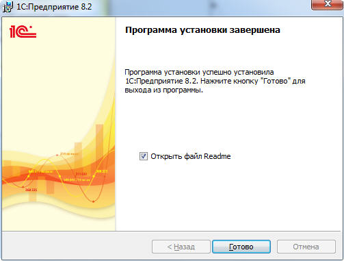
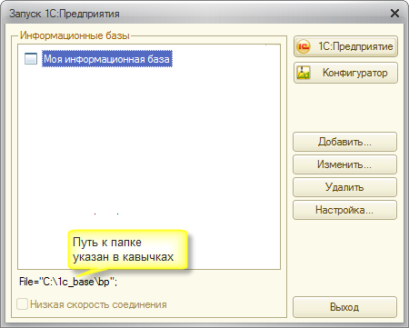

Скачайте дистрибутив последней версии 1С:Предприятия 8 с сайта поддержки пользователей 1С по указанному адресу https://users.v8.1c.ru/distribution/project/Platform83
Укажите имя пользователя и пароль, зарегистрированные на сайте поддержки пользователей: http://users.v8.1c.ru/

Для скачивания файла перейдите в раздел «Технологическая платформа 1С:Предприятия для Windows»:
Сохраните файл на диск, запомните папку, в которую его сохранили:

Обратите внимание: для установки программы пользователь Windows должен обладать правами администратора! Распакуйте загруженный файл с архивом. В папке, в которую распаковали архив, найдите и запустите файл Setup.exe:

Далее следуйте инструкциям программы – установщика:






Определите и откройте каталог, в котором находится нужная база данных:
